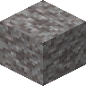

可疑的沙砾
Suspicious Gravel
英文名: Suspicious Gravel命名空间 ID:
minecraft:suspicious_gravel类型: 方块所属模组: Minecraft资料检索: 🔎 在 MC百科 搜索「可疑的沙砾」纯原版配方（合成、烧炼等）不在本图鉴收录范围，以下仅列出模组与 CraftTweaker 相关配方。
模组配方 · 产自 (1)
supplementaries:sus_craftingSupplementaries

原始 JSON
{
"fabric:load_conditions": [
{
"condition": "supplementaries:flag",
"flag": "sus_recipes"
}
],
"neoforge:conditions": [
{
"type": "supplementaries:flag",
"flag": "sus_recipes"
}
],
"type": "supplementaries:sus_crafting",
"ingredient": {
"item": "minecraft:gravel"
},
"result": {
"id": "minecraft:suspicious_gravel"
}
}